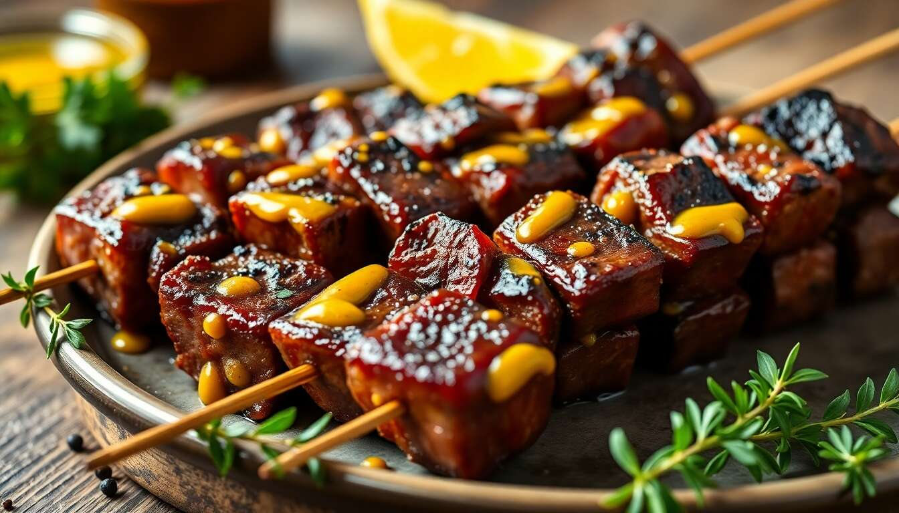

Mamas Brochettes
C’est le cœur battant de la vie nocturne et de la convivialité mahoraise. Les célèbres brochettes, principalement de bœuf, sont grillées en plein air dès la tombée de la nuit aux coins des rues par les emblématiques "Mamas".
Cette spécialité populaire se distingue par le parfum unique du charbon de bois mêlé aux épices de la marinade, attirant les gourmands autour d'un moment de partage authentique.
Le secret de sa préparation
Le secret réside dans la découpe fine de la viande de bœuf et sa longue marinade. On utilise un mélange d'huile, d'ail écrasé, de gingembre, de poivre et parfois d'une touche de curcuma pour attendrir et parfumer la viande. Les morceaux sont ensuite enfilés serrés sur de pics en bambou avant d'être saisis à feu vif sur des grils artisanaux.
Elles sont traditionnellement servies à l'unité ou en lot, généreusement escortées de morceaux de manioc frit ou bouilli, de bananes vertes frites (poba) et d'un indissociable jus de piment local pour les amateurs de sensations fortes.